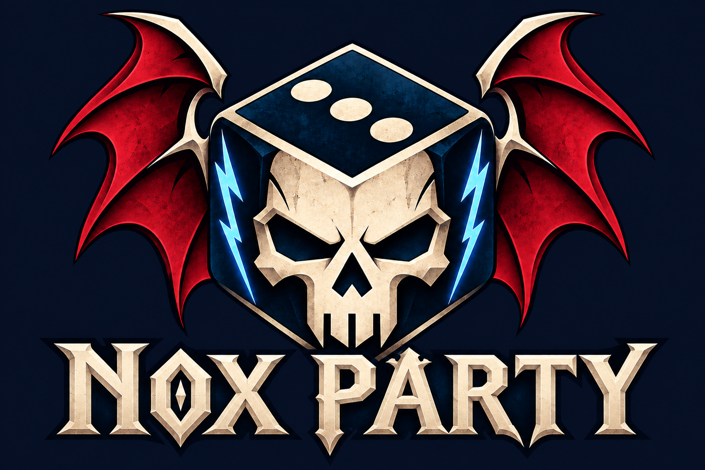

WARHAMMER • НАСТОЛЬНЫЕ РОЛЕВЫЕ ИГРЫ
Мрачный мир.
Твоя компания.
Один бросок меняет историю. Найди игроков и мастера, с которыми захочется её пройти.
Найти своих ↓ Онлайн и за одним столомНовичкам рады

ТВОЁ ПРИКЛЮЧЕНИЕ НАЧИНАЕТСЯ С ПАРТИИДОСКА ПРИКЛЮЧЕНИЙ
За столом есть место
Набор открыт
Пока нет совпадений
Попробуй другой формат или убери часть фильтров.